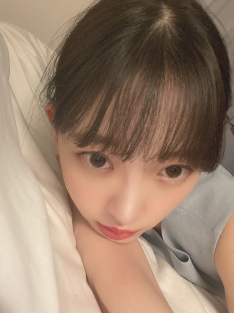

2020/0711Satマヨネーズとマスタードでした
こんにちは
なんだか最近梅雨に引っ張られて
お家ではぐたーっとしてしまいます


起き上がるのに時間がかかります
起こしてーって手を伸ばして
お母さんに手を引っ張られて
ようやく起き上がります
˗ˏˋぐでたま ˎˊ˗
˗ˏˋぐでたま ˎˊ˗
シャキッとせなあかんねー

おそろ

中田花奈さんのこれからの道も、
キラキラと美しく
充実したものでありますように
2020/07/11 10:36
コメント(266)
みおな
そうだね。
サンエトのうちの星がまた一つ遠くでも輝くように。
ね。
そうだね。
サンエトのうちの星がまた一つ遠くでも輝くように。
ね。
気だるい表情の未央奈ちゃん、今日も素敵です。可愛く美しい！
パネル展楽しみにしてます。
体調に気を付けてね。
パネル展楽しみにしてます。
体調に気を付けてね。
ブログ更新ありがとう!
かなりんの卒業とても寂しいけど応援してる
未央奈や乃木坂46のことも永遠に
かなりんの卒業とても寂しいけど応援してる
未央奈や乃木坂46のことも永遠に
もうすぐパネル展楽しみです！朝起きれないのわかります。
未央奈ブログ更新ありがとう！
雨が続くね。ぐでたまな未央奈を想像すると可愛いな。
おそろに堀北の絆を感じる良い写真。
おでこ可愛い。前髪分けると新鮮だね。
かなりん卒業だね。どうして卒業するんだろうと思う。寂しくなるなあ。
では！
雨が続くね。ぐでたまな未央奈を想像すると可愛いな。
おそろに堀北の絆を感じる良い写真。
おでこ可愛い。前髪分けると新鮮だね。
かなりん卒業だね。どうして卒業するんだろうと思う。寂しくなるなあ。
では！
みおなこんにちは！
今年の梅雨は長いよねー
早く夏らしく晴れてほしい！
でもみおなはいつも頑張ってるから、
ぐでーっとしてるって聞くと
休めてるんだなってちょっと安心する
たまにはいいでしょ、ぐでみおなも◎
起きる時はどんな目覚まし音や曲にしてる～？
花奈さんとみおな、
メディアではあまり絡みを見なかったけど
ちょっとしたアンケートやモバメとかで
慕ってるのが伝わってくる感じが好きでした
別れはいつもつらいけど、
つらいと思うだけの親しさになれたのなら
その絆はこれからも続いていくよね
花奈さんのこれからの道が充実してるよう
自分も祈ってます
今年の梅雨は長いよねー
早く夏らしく晴れてほしい！
でもみおなはいつも頑張ってるから、
ぐでーっとしてるって聞くと
休めてるんだなってちょっと安心する
たまにはいいでしょ、ぐでみおなも◎
起きる時はどんな目覚まし音や曲にしてる～？
花奈さんとみおな、
メディアではあまり絡みを見なかったけど
ちょっとしたアンケートやモバメとかで
慕ってるのが伝わってくる感じが好きでした
別れはいつもつらいけど、
つらいと思うだけの親しさになれたのなら
その絆はこれからも続いていくよね
花奈さんのこれからの道が充実してるよう
自分も祈ってます
可愛い〜！
今日学校へ行きたくない寝坊した子供の日常じゃん、みおちゃん、笑。
梅雨ですね、梅雨はいつか終わる日がくるだろう。
いつかですかね。
きいちゃんの靴、一瞬誰かのか分からない
HINA KOKって誰と思った。
梅雨ですね、梅雨はいつか終わる日がくるだろう。
いつかですかね。
きいちゃんの靴、一瞬誰かのか分からない
HINA KOKって誰と思った。
こんにちは、堀ちゃん。
ブログ更新ありがとう！！
中田さんの卒業は、本当に残念です。
しかし、将来の中田さんのためには、
これは避けて通れない道なんだろうなと、
中田さんのことをもっと応援しようと決めました！！
中田さんのことは本当に好きでしたし、
ショックではあります。
もう少し続けてほしいという気持ちもあります。
堀ちゃんもいろいろ気持ちの整理が
つかないかもしれませんが、
それを乗り越えて、がんばってほしいです。
堀ちゃん、悲しみを乗り越えてください。
マヨネーズはカロリー高いよ。
ブログ更新ありがとう！！
中田さんの卒業は、本当に残念です。
しかし、将来の中田さんのためには、
これは避けて通れない道なんだろうなと、
中田さんのことをもっと応援しようと決めました！！
中田さんのことは本当に好きでしたし、
ショックではあります。
もう少し続けてほしいという気持ちもあります。
堀ちゃんもいろいろ気持ちの整理が
つかないかもしれませんが、
それを乗り越えて、がんばってほしいです。
堀ちゃん、悲しみを乗り越えてください。
マヨネーズはカロリー高いよ。
お疲れ様なのです└(ﾟ∀ﾟ└) (┘ﾟ∀ﾟ)┘
分かるわ～（n‘∀‘)η
休みにぐでたま化するの！
どんだけ寝るってぐらい寝るわ ( ´△｀)
分かるわ～（n‘∀‘)η
休みにぐでたま化するの！
どんだけ寝るってぐらい寝るわ ( ´△｀)
みおなさん、ぐでたま、上手い表現だね！！
やっぱ、梅雨の時期はお休みだと、家の中でボーっとしちゃうよね～。
うち、最近、数学や英語を学習し直してる。
なんか、本屋で参考書をちらっと見てたら、急に学習したくなってきて、家の中での暇をつぶすには画期的だよ～。
さらに、来年は東京五輪が開催されるから、英語はかなり役立つから、特に頑張ってる！
みおなさん、前回の鏡の話も含めて、数学と英語はおすすめ！
英語で思い出したけど、かなりん、卒業や。涙～。
みおなさんの｢中田花奈さんのこれからの道もキラキラと美しく、充実したものでありますように｣の言葉、たくさんの想いがつまっていて、とても温かい、シンプルなのに、とても感動！
再び、涙。
さすが、言葉の達人！
さらに、みおなさん、かなりんに贈る言葉を書いたブログ、１番乗り、偉いやん！
拍手、ぱちぱちぱち。
かなりん、ブログの達人だが、みおなさんもいっぱいいっぱいブログを更新してくれる、ブログの達人！！
いつも楽しみにしとる、元気をくれる。
改めて、ありがとう。
これからもお仕事やおうち時間など、もっと頑張ってなあ～！
うち、みおなさん、かなりん、乃木坂の皆、全力応援してるから！
それでは、また、ブログ書いてね。
めっちゃ楽しみ！
やっぱ、梅雨の時期はお休みだと、家の中でボーっとしちゃうよね～。
うち、最近、数学や英語を学習し直してる。
なんか、本屋で参考書をちらっと見てたら、急に学習したくなってきて、家の中での暇をつぶすには画期的だよ～。
さらに、来年は東京五輪が開催されるから、英語はかなり役立つから、特に頑張ってる！
みおなさん、前回の鏡の話も含めて、数学と英語はおすすめ！
英語で思い出したけど、かなりん、卒業や。涙～。
みおなさんの｢中田花奈さんのこれからの道もキラキラと美しく、充実したものでありますように｣の言葉、たくさんの想いがつまっていて、とても温かい、シンプルなのに、とても感動！
再び、涙。
さすが、言葉の達人！
さらに、みおなさん、かなりんに贈る言葉を書いたブログ、１番乗り、偉いやん！
拍手、ぱちぱちぱち。
かなりん、ブログの達人だが、みおなさんもいっぱいいっぱいブログを更新してくれる、ブログの達人！！
いつも楽しみにしとる、元気をくれる。
改めて、ありがとう。
これからもお仕事やおうち時間など、もっと頑張ってなあ～！
うち、みおなさん、かなりん、乃木坂の皆、全力応援してるから！
それでは、また、ブログ書いてね。
めっちゃ楽しみ！
すちやよ♥️
みおなさんはお母さんの前に子供になったね。
仲がいいってすごくいいことですね。羨ましい。
人はいくつになったとしても親の心にはまだ我が家のかわいいがきですね。
仲がいいってすごくいいことですね。羨ましい。
人はいくつになったとしても親の心にはまだ我が家のかわいいがきですね。
未央奈ちゃん、ブログ更新ありがとう！
私も梅雨に引っ張られてグダグダしちゃってる…気を引き締めなくちゃ！
日奈子ちゃんとおそろいいなー。
体調には気をつけてね。
私も梅雨に引っ張られてグダグダしちゃってる…気を引き締めなくちゃ！
日奈子ちゃんとおそろいいなー。
体調には気をつけてね。
未央奈ちゃん、こんにちは♪
お母さんに起こしてもらったのですね。
僕は12時頃に起きました。
このあと乃木坂の動画を見て過ごします。
今回のブログの写真は3枚目のが好きです。
昨日は レジェンド という映画を見ました。
火山のような場所で戦闘をするシーンを楽しみました。
またコメントするね☆
お母さんに起こしてもらったのですね。
僕は12時頃に起きました。
このあと乃木坂の動画を見て過ごします。
今回のブログの写真は3枚目のが好きです。
昨日は レジェンド という映画を見ました。
火山のような場所で戦闘をするシーンを楽しみました。
またコメントするね☆
ブログ更新ありがとうございました
同じなかなか起きれないよ!
乃木坂の卒業生、現役メンバー全員に幸あれ
同じなかなか起きれないよ!
乃木坂の卒業生、現役メンバー全員に幸あれ
こんにちは、未央奈ちゃん。
いいですね、『ぐでみおな』(笑)。カワイイ。
僕もぐでっとしたいなぁ。
いいですね、『ぐでみおな』(笑)。カワイイ。
僕もぐでっとしたいなぁ。
未央奈お疲れ様です！
ブログ更新ありがとう！
最近起きるの辛いよね笑
ぐたーっていつまでもしてたい笑
早く未央奈に会いたいです！
これからもずっと応援してる！
がんばれー！
ブログ更新ありがとう！
最近起きるの辛いよね笑
ぐたーっていつまでもしてたい笑
早く未央奈に会いたいです！
これからもずっと応援してる！
がんばれー！
未央奈〜！！
ブログ更新ありがとう
かなの卒業驚いたよね！
インスタ15日までなの悲しい
体には気をつけてね〜！！
次の更新も待ってるね〜！！
ブログ更新ありがとう
かなの卒業驚いたよね！
インスタ15日までなの悲しい
体には気をつけてね〜！！
次の更新も待ってるね〜！！
可愛い！
ブログ更新ありがとう!
今日も安定の可愛さだね!
今日も安定の可愛さだね!
未央奈〜（；＿；）
かなちゃんの卒業発表かなしいよ〜（ ; ; ）
直接会ってお礼がいいたい、、、
かなみおな大好きでした。
かなちゃんの卒業発表かなしいよ〜（ ; ; ）
直接会ってお礼がいいたい、、、
かなみおな大好きでした。
堀未央奈さん更新ありがとうございます
中田花奈さんが卒業してしまうのは悲しいものですが、
これからの乃木坂46も明るいグループでいるよう、
未央奈さんも頑張ってください！
中田花奈さんが卒業してしまうのは悲しいものですが、
これからの乃木坂46も明るいグループでいるよう、
未央奈さんも頑張ってください！
おつかれん
おそろいのサンダルいいです
花奈さんの卒業発表がありましたね
皆さんそれぞれの道に進んでいくことは仕方のないことですけど寂しいです
FRIDAY見ましたよ
パネル展も楽しみです
花奈さんの卒業発表がありましたね
皆さんそれぞれの道に進んでいくことは仕方のないことですけど寂しいです
FRIDAY見ましたよ
パネル展も楽しみです
みおたんきゃわたん(^-^)
ブログありがとう！パネル展すごい楽しみだなぁ！！とりあえずポストカードとパネル欲しいからいっぱい買う！！インスタ15日で直接投稿するの終わっちゃうのすごく寂しい、、毎日楽しみで、ファッションやメイクや質問返しとか見るの好きだったし、あんなに上手くインスタを使いこなしてるのメンバー1だと思う！クロックスで名前入れるのオシャレだなぁ！！私もやりたくなってきた笑笑 水色本当に似合うよね！！爽やかな感じが好き！
ももんが
ももんが
梅雨ってなんでぐでたまになっちゃうんだろね
未央奈ブログ更新ありがとう！
最近は雨だったり急に晴れたりだね。
気分が落ちちゃう笑
最近はまたコロナ流行ってきてるから
気おつけてね
いつになったら未央奈に会えるのかなあ
全握早く行きたいなー
最近は雨だったり急に晴れたりだね。
気分が落ちちゃう笑
最近はまたコロナ流行ってきてるから
気おつけてね
いつになったら未央奈に会えるのかなあ
全握早く行きたいなー
ブログ更新ありがとうございます。
起き上がるのに時間かかかるのめっちゃ分かります。僕は休みの日は特に起きるのが遅いです。
中田花奈さんの卒業は寂しいですか、最後まで応援したいですね。
起き上がるのに時間かかかるのめっちゃ分かります。僕は休みの日は特に起きるのが遅いです。
中田花奈さんの卒業は寂しいですか、最後まで応援したいですね。
ブログありがと〜！
なかなかやる気出ないですよね。分かります。でも堀ちゃんの可愛い写真をみて頑張れそうです！！
中田さん卒業ほんとに悲しいです。やっぱり誰かの卒業って慣れないですよね。これからもずっとずっと応援していきたいです。
【今日の推し307】part16
p.86
･陰がある表情もいい
･みつめ力強い
p.87
左下
･堀ちゃんが写真集中主役の座を奪われた数少ないカットの1つ
右下
･挙動不審な感じも可愛い
p.90~91
･大人っぽくて好き！
･中分け未央奈も良いですよね
26
なかなかやる気出ないですよね。分かります。でも堀ちゃんの可愛い写真をみて頑張れそうです！！
中田さん卒業ほんとに悲しいです。やっぱり誰かの卒業って慣れないですよね。これからもずっとずっと応援していきたいです。
【今日の推し307】part16
p.86
･陰がある表情もいい
･みつめ力強い
p.87
左下
･堀ちゃんが写真集中主役の座を奪われた数少ないカットの1つ
右下
･挙動不審な感じも可愛い
p.90~91
･大人っぽくて好き！
･中分け未央奈も良いですよね
26
堀さん今日もお綺麗です！
目覚めたら未央奈のブログ上がってて寝起きから幸せです！
ありがとう！(☝ ˘ω˘)☝ふぅー！！
未央奈ほんと綺麗だよ！
目覚めたら未央奈のブログ上がってて寝起きから幸せです！
ありがとう！(☝ ˘ω˘)☝ふぅー！！
未央奈ほんと綺麗だよ！
未央奈ちゃん更新ありがとう☺
ぐたーとしたくなりますよね
クロックスのお揃い可愛いな♪
中田さんの卒業..さみしいですが
これからも応援したいですね(^^)
地元の方は大丈夫でしたか？
大雨被害、心配です(´；ω；`)
ぐたーとしたくなりますよね
クロックスのお揃い可愛いな♪
中田さんの卒業..さみしいですが
これからも応援したいですね(^^)
地元の方は大丈夫でしたか？
大雨被害、心配です(´；ω；`)
ねぇ、シャキっとしてちょうだい♪
写真、すごい良いです(*ﾟーﾟ)
今晩は、世にも奇妙な物語を視る予定。
写真、すごい良いです(*ﾟーﾟ)
今晩は、世にも奇妙な物語を視る予定。
未央奈こんばんはー
ブログ更新嬉しいよー
んね梅雨はジメジメしてるし気分も上がらない
パネル展楽しみすぎる
ブログ更新嬉しいよー
んね梅雨はジメジメしてるし気分も上がらない
パネル展楽しみすぎる
ブログ更新ありがとう。
まったく応援とは関係ないのですが、
NHKさんの今日の１８時？？の
『雲霧仁左衛門』がお勧めです。
すごい脚本家さんたちのドラマです。
こう、暑かったり雨降ったり、
流行の病だったり、
大変な時期ですが、
ただただ堀ちゃんが可愛いくて癒されます。
花奈ちゃんも、堀ちゃんみたいな
かっこいい後輩がいたら安心んして次へ進めるよ！！
いつも元気をありがとう
まったく応援とは関係ないのですが、
NHKさんの今日の１８時？？の
『雲霧仁左衛門』がお勧めです。
すごい脚本家さんたちのドラマです。
こう、暑かったり雨降ったり、
流行の病だったり、
大変な時期ですが、
ただただ堀ちゃんが可愛いくて癒されます。
花奈ちゃんも、堀ちゃんみたいな
かっこいい後輩がいたら安心んして次へ進めるよ！！
いつも元気をありがとう
堀ちゃん、ブログ更新ありがとね
マヨネーズとマスタードでした？
おいしそうだな、なんだろ？
パネル展をもって個人インスタ終了ですか、寂しいよ〜
頻繁に更新してくれて面白さ、可愛さもあり
いつも楽しみにしてたよ。
雨降ってると早く起きなくてもいいやと思っちゃうよね。
ダラダラしちゃう。
再来週パネル展行きます、久々の遠出かな、楽しみです。
カナさんの卒業寂しいです
暖かく贈れればいい思いますね
では
マヨネーズとマスタードでした？
おいしそうだな、なんだろ？
パネル展をもって個人インスタ終了ですか、寂しいよ〜
頻繁に更新してくれて面白さ、可愛さもあり
いつも楽しみにしてたよ。
雨降ってると早く起きなくてもいいやと思っちゃうよね。
ダラダラしちゃう。
再来週パネル展行きます、久々の遠出かな、楽しみです。
カナさんの卒業寂しいです
暖かく贈れればいい思いますね
では
マヨネーズとマスタードでした
（マヨマスタードの）ハムサンド作るのにパンとハムないで〜！みおなさん！！
（マヨマスタードの）ハムサンド作るのにパンとハムないで〜！みおなさん！！
堀ちゃん
こんにちは。
ソースかな？
蒸し暑いですね。
梅雨時は体が重いですよね。
雨がいつ降るか分からない空もコロナの再拡大で外出がためらわれます。
自分はここのところ、UNIQLOにハマってます。
暑がりで汗っかきなので、UNIQLOに涼を求めてます。
エアリズムマスクは涼しくはないですが、肌触りが良いです。
通販でも入荷した平日の午後なら買えるようになりました。
可愛いすぎな写真に癒されてますよ。
幸せをありがとうございます。
癒しのコレクションが増えました。
お母さんの代わりに起こしてあげたいです。
お母さんでないと嫌かな？
中田さんの卒業、寂しいですね。
残りの時間を大切にしたいですが、何とか会えると良いです。
お身体にはお気をつけてくださいね。
頑張って行きましょう！
ソースかな？
蒸し暑いですね。
梅雨時は体が重いですよね。
雨がいつ降るか分からない空もコロナの再拡大で外出がためらわれます。
自分はここのところ、UNIQLOにハマってます。
暑がりで汗っかきなので、UNIQLOに涼を求めてます。
エアリズムマスクは涼しくはないですが、肌触りが良いです。
通販でも入荷した平日の午後なら買えるようになりました。
可愛いすぎな写真に癒されてますよ。
幸せをありがとうございます。
癒しのコレクションが増えました。
お母さんの代わりに起こしてあげたいです。
お母さんでないと嫌かな？
中田さんの卒業、寂しいですね。
残りの時間を大切にしたいですが、何とか会えると良いです。
お身体にはお気をつけてくださいね。
頑張って行きましょう！
未央奈ちゃんブログありがとう
かなちゃんと未央奈ちゃん推していたので悲しさがあったけど2人の関係性本当に大好きです✨
未央奈ちゃんの小顔にすごく憧れて今マッサージやってます！おすすめのマッサージあったらぜひ教えて欲しいです
いつもブログすっごく嬉しいです
かなちゃんと未央奈ちゃん推していたので悲しさがあったけど2人の関係性本当に大好きです✨
未央奈ちゃんの小顔にすごく憧れて今マッサージやってます！おすすめのマッサージあったらぜひ教えて欲しいです
いつもブログすっごく嬉しいです
未央奈ちゃんこんにちは‼楽しみにしてます‼頑張ります‼気をつけて下さい！ありがとうございます‼体調に気をつけて下さい！頑張ります‼これからも乃木坂46を応援します‼
ケチャップ！
ブログ更新ありがとうございます
かなさん卒業ですね寂しいです
今日も可愛いです
これからも乃木坂46、未央奈さんを応援します！
かなさん卒業ですね寂しいです
今日も可愛いです
これからも乃木坂46、未央奈さんを応援します！
こんにちは。ブログ更新ありがとうございます。
私もめちゃめちゃ朝弱いです。というか、無職なので、用事がなければお昼頃まで起きません。不眠症なので、睡眠薬を飲んでいるのですが、その薬が切れるまで起きられません。月一回の通院は午前中ですが、なぜかその時は目覚まし時計で起きられます。
かなりん卒業が発表されました。頭の良い子なので、卒業後の事も考えてはいるだろうけど、ついに来たか、って感じです。
卒業生がいるからこそ、新入生も入ってくるのですが、やっぱり寂しいです。
ではまた。
私もめちゃめちゃ朝弱いです。というか、無職なので、用事がなければお昼頃まで起きません。不眠症なので、睡眠薬を飲んでいるのですが、その薬が切れるまで起きられません。月一回の通院は午前中ですが、なぜかその時は目覚まし時計で起きられます。
かなりん卒業が発表されました。頭の良い子なので、卒業後の事も考えてはいるだろうけど、ついに来たか、って感じです。
卒業生がいるからこそ、新入生も入ってくるのですが、やっぱり寂しいです。
ではまた。
堀ちゃん！更新ありがとう！！
起き上がるの大変よね〜笑
わかるわかる！
おうちの中の
ぐでたま未央奈も
見てみたい！笑
きいちゃんとのおそろ
めっちゃ似合ってていい〜！！
さすがの仲の良さですね！
メガネ未央奈めっちゃ好き！
最後の写真最高です！
パネル展も近づいてきたね！
めっっちゃ楽しみにしてますよ！！
ほんとに
かなりんお疲れ様でしただよね！
これからも頑張って欲しい！
では！
次回の更新も楽しみに
待ってますよ！
起き上がるの大変よね〜笑
わかるわかる！
おうちの中の
ぐでたま未央奈も
見てみたい！笑
きいちゃんとのおそろ
めっちゃ似合ってていい〜！！
さすがの仲の良さですね！
メガネ未央奈めっちゃ好き！
最後の写真最高です！
パネル展も近づいてきたね！
めっっちゃ楽しみにしてますよ！！
ほんとに
かなりんお疲れ様でしただよね！
これからも頑張って欲しい！
では！
次回の更新も楽しみに
待ってますよ！
未央奈ちゃん、いつもブログありがとう！
今回の写真も可愛く美しい。けだるい表情がたまらなく魅力的です。
天候不順に感染増加で鬱陶しい夏ですが、未央奈を見て乗り切ります。パネル展とっても楽しみだよ。それとフライデーのグラビア見ました。とても綺麗です。
体調に気を付けてね。
今回の写真も可愛く美しい。けだるい表情がたまらなく魅力的です。
天候不順に感染増加で鬱陶しい夏ですが、未央奈を見て乗り切ります。パネル展とっても楽しみだよ。それとフライデーのグラビア見ました。とても綺麗です。
体調に気を付けてね。
堀さん、こんにちは。
まだ東京地方は梅雨明けやらず。九州地方や長野、そして堀さんの地元岐阜などに大雨で大きな被害が出ていることに心が痛みます。被害に遭われた方々に心よりお見舞い申し上げます。
梅雨どきは湿気が多くて、さらに気圧も低いので人の心も湿りがち。どんよりした気分になってしまうのもよくわかります。そんなときは美味しいものでも召し上がり、気分をアゲていきましょう！
中田さんの卒業発表は番組のツイキャスで生で聴いておりました。やはりいつでも卒業のお知らせは寂しく悲しい思いが胸にこみ上げてきます。
でも中田さんの未来に幸多かれと祈る気持ちは僕らも一緒。お別れのその日まで、変わらず応援していきます。これからもどうぞよろしく、中田さん。
ではまたコメントします。おそろいのサンダルかわいい。
さらばだ、また会おう！（気球に乗って去りぬ〜）
まだ東京地方は梅雨明けやらず。九州地方や長野、そして堀さんの地元岐阜などに大雨で大きな被害が出ていることに心が痛みます。被害に遭われた方々に心よりお見舞い申し上げます。
梅雨どきは湿気が多くて、さらに気圧も低いので人の心も湿りがち。どんよりした気分になってしまうのもよくわかります。そんなときは美味しいものでも召し上がり、気分をアゲていきましょう！
中田さんの卒業発表は番組のツイキャスで生で聴いておりました。やはりいつでも卒業のお知らせは寂しく悲しい思いが胸にこみ上げてきます。
でも中田さんの未来に幸多かれと祈る気持ちは僕らも一緒。お別れのその日まで、変わらず応援していきます。これからもどうぞよろしく、中田さん。
ではまたコメントします。おそろいのサンダルかわいい。
さらばだ、また会おう！（気球に乗って去りぬ〜）
未央奈ちゃん＼(^o^)／お疲れさまでした
梅雨に負けるように(｡>﹏<｡)
日奈子とお揃いって、なんで日奈子の方はK1個多いの？（笑）
これからも頑張って(/･ω･)/
花奈との残り時間も大切にして
梅雨に負けるように(｡>﹏<｡)
日奈子とお揃いって、なんで日奈子の方はK1個多いの？（笑）
これからも頑張って(/･ω･)/
花奈との残り時間も大切にして


ついに来週はパネル展です！
もちろん行きますね！
次も写真集買うから、3冊目です✌️
梅雨早く明けて欲しいですね。
体調気をつけて頑張ってください！